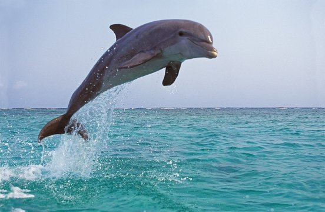

Bem-vindo ao Mundo da Biologia Marinha
Descubra animais incríveis, assista vídeos educativos, leia curiosidades e teste seus conhecimentos sobre o oceano!
Animais Marinhos
Golfinho
São mamíferos inteligentes e vivem em grupos. Usam sons para se comunicar.
Tubarão-Branco
Predador poderoso com olfato aguçado. Pode sentir sangue a grandes distâncias.

Polvo
Tem 8 braços, é superinteligente e se camufla para se proteger.

Cavalo-Marinho
O macho carrega os filhotes. Tem aparência delicada e nada na vertical.

Água-viva
Possuem tentáculos que podem queimar. Algumas brilham no escuro!

Tartaruga-Marinha
Podem viver mais de 100 anos e estão ameaçadas pela poluição.

Vídeo Educativo
Assista a esse vídeo incrível sobre os segredos do oceano:
Curiosidades do Mar
- Mais de 80% do oceano nunca foi explorado.
- Baleias podem cantar músicas que duram horas.
- Existe um peixe chamado peixe-pescador que tem uma luz na cabeça.
- Alguns polvos abrem potes para pegar comida.
Quiz Marinho 🐠
Pergunta 1: Qual animal tem 8 braços?
Resposta: Polvo
Pergunta 2: Qual macho cuida dos filhotes?
Resposta: Cavalo-marinho
Pergunta 3: Qual animal pode brilhar no escuro?
Resposta: Água-viva